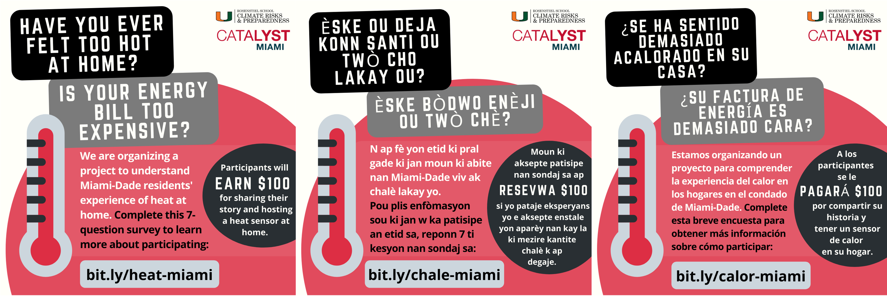

Co-authored articles do not show related news coverage and invited presentations. Note: *corresponding author; Gmentored graduate student; Umentored undergraduate student
 Photo credit: Catalyst Miami
Peer-reviewed articles
Lynée L Turek-Hankins*, Mayra Cruz, Natalia Brown, Nkosi Muse, Amy Clement, Katharine J Mach. 2025. Interactions between indoor heat and energy affordability amplify household risks in hot-humid US climate zones. One Earth 8(3). doi: 10.1016/j.oneear.2025.101235. Code and data
Cruz, Mayra*, Katharine J Mach, Lynée L Turek-Hankins, Kilan C Ashad-Bishop, Zinzi D Bailey, Scotney D Evans, Ashley Fanning, Margo Fernandez-Burgos, Jane Gilbert, Bereatha Howard, Monique Mahabir, Julia Marturano, Lisa N Murphy, Nkosi Muse, Joanne Pérodin, and Amy C Clement. 2025. Where heat does not come in waves: a framework for understanding and managing chronic heat. Environmental Research: Climate 4(2), p. 023002. doi: 10.1088/2752-5295/adc827. Code and data
Katharine J Mach*, Kripa Jagannathan, Linda Shi, Lynée L Turek-Hankins, Jeffrey R Arnold, Christa Brelsford, Alejandro N Flores, Jing Gao, Carlos E Martín, David L McCollum, Richard Moss, Jennifer Niemann, Brenda Rashleigh, Patrick M Reed. 2024. RResearch to confront climate change complexity: Intersectionality, integration, and innovative governance. Earth’s Future 12(6), e2023EF004392. doi: 10.1029/2023EF004392.
Lynée L Turek-Hankins*, Erin Coughlan de Perez, Giulia Scarpa, Raquel Ruiz-Diaz, Patricia Nayna Schwerdtle, Elphin Tom Joe, Eranga K Galappaththi, Emma M French, Stephanie E Austin Chandni Singh, Mariella Siña, AR Siders, Maarten K van Aalst, Sienna Templeman, Abraham M Nunbogu, Lea Berrang-Ford, Tanvi Agrawal, the GAMI team, and Katharine J Mach. 2021. Climate change adaptation to extreme heat: a global systematic review of implemented action. Oxford Open Climate Change 1(1). doi: 10.1093/oxfclm/kgab005.
Coverage: CarbonBrief, News@TheU Invited presentations: AGU 2021, Cornell Environmental and Water Resources Engineering Seminar
Lea Berrang-Ford*, AR Siders, Alexandra Lesnikowski, … Lynée L Turek-Hankins, …Thelma Zulfawu Abu. 2021. A systematic global stocktake of evidence on human adaptation to climate change. Nature Climate Change 11. doi: 10.1038/s41558-021-01170-y. Code and data: machine learning platform and reconciliation of codes
Malcolm Araos*, Kripa Jagannathan, Roopam Shukla, Idowu Ajibade, Erin Coughlan de Perez, Katy Davis, James D. Ford, Eranga K. Galappaththi, Caitlin Grady8, AJ Hudson, Elphin Tom Joe, Christine J Kirchhoff, Alexandra Lesnikowski, Gabriela Nagle Alverio, Miriam Nielsen, Ben Orlove, Brian Pentz, Diana Reckien, AR Siders, Nicola Ulibarri, Maarten van Aalst, Thelma Zulfawu Abu, Tanvi Agrawal, Lea Berrang-Ford, Rachel Bezner Kerr, Shaugn Coggins, Matthias Garschagen, Alexandra Harden, Katharine J Mach, Abraham Marshall Nunbogu, Pandey Spandan, Sienna Templeman, Lynée L Turek-Hankins, and the GAMI team. 2021. Equity in human adaptation-related responses: A systematic global review. One Earth 4(10). doi: 10.1016/j.oneear.2021.09.001.
Lynée L Turek-Hankins*, Miyuki Hino, and Katharine J Mach. 2020. Risk screening methods for extreme heat: Implications for equity-oriented adaptation. PLoS One 15(11). doi: 10.1371/journal.pone.0240841.
Invited presentations: City Government of Hallandale Beach FL
Articles in review
Lynée L Turek-Hankins*, Vince Schueler, Miyuki Hino, and Katharine J Mach. In review. Weatherization reduces needs for energy bill assistance. Energy Policy.
Christa Brelsford, Maria Amaya, Mohammed Basheer, Alysha Helmrich, Christian J Klassert, Xinchang Li, Landon T Marston, Hassan Niazi, Wei Peng, Pranab Kanti Roy Chowdhury*, Jinyu Shiwang, Lynée L Turek-Hankins, Taryn Waite, Jim Yoon, and Shan Zuidema. In review. Key moments in coupled human-natural systems. In Review. Earth’s Future.
Assessments
Lida Teneva, Jasmine Brown, Zac Cannizzo, Molly Cross, Samantha Chisholm Hatfield, Erica Fleishman, Stephanie Mladinich, Robert Newman, Meagan Oldfather, Lynée L Turek-Hankins, and Melissa Ward. Expected 2028. Ch. 19. Nature and ecosystems. Sixth U.S. National Climate Assessment, Washington DC, USA: U.S. Global Change Research Program.
Katharine J Mach, Robert Vallerio, Jeffrey R Arnold, Christa Brelsford, Katherine V Calvin, Alejandro N Flores, Jing Gao, Kripa Jagannathan, David Judi, Carlos E Martín, Frances C Moore, Richard Moss, Earthea Nance, Brenda Rashleigh, Patrick M Reed, Linda Shi, Lynée L Turek-Hankins. 2023. Ch. 18. Sector interactions, multiple stressors, and complex systems. Fifth U.S. National Climate Assessment, Washington DC, USA: U.S. Global Change Research Program. doi: 10.7930/NCA5.2023.CH18.
Opinion pieces
Lynée L Turek-Hankins and Katharine J Mach. 2021. A major federal response to occupational extreme heat is here at last. The Conversation.